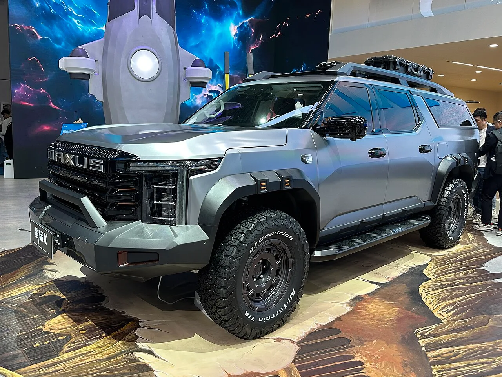

▲ 아마록은 시장에 따라 전혀 다른 플랫폼을 쓰는 차가 됐다 ⓒ Wikimedia Commons
차 이름이 같으면 같은 차라고 생각하기 쉽습니다.
아마록은 그렇지 않습니다.
지금 세계에는 배지만 공유하는 전혀 다른 아마록 두 대가 있습니다. 그리고 2027년, 그 격차가 더 벌어집니다.
1. 아마록이 두 대가 된 경위
2010년 나온 초대 아마록은 폭스바겐이 직접 만든 차였습니다. 사다리형 프레임을 쓴 정통 픽업이었습니다.
2022년, 글로벌 시장의 아마록은 포드 레인저 기반으로 바뀌었습니다. 폭스바겐과 포드의 협력 결과였습니다.
그런데 남미는 초대 아마록을 단종시키지 않았습니다. 사다리형 프레임 그대로 유지하며 2024년 페이스리프트까지 했습니다.
| 구분 | 글로벌형 | 남미형 |
|---|---|---|
| 기반 | 포드 레인저 | 초대 아마록 프레임 |
| 시작 | 2022년 | 2010년 — 2024년 페이스리프트 |
| 관계 | 배지 외에 공유하는 것이 없음 | |
📍 왜 이런 일이 벌어지나
남미 픽업 시장은 가격 민감도가 매우 높습니다. 레인저 기반 아마록은 그 시장에 넣기에 비쌉니다. 반면 이미 감가상각이 끝난 구형 플랫폼은 싸게 만들 수 있습니다. 브랜드가 같은 이름을 두 개의 다른 차에 붙이는 것을 감수하는 이유입니다.
2. 2027년 남미형 — 이번엔 중국 뼈대
2027년 나올 새 남미형은 또 다른 선택을 합니다. 중국 SAIC의 하드웨어를 씁니다.
| 항목 | 내용 |
|---|---|
| 플랫폼 | 중국 SAIC — 맥서스 인터스텔라 X 공유 가능성 |
| 생산 | 아르헨티나 헤네랄 파체코 공장 |
| 시장 | 남미 중심 — 타 시장 확대 가능성 |
| 경쟁 모델 | 토요타 하이럭스 · 포드 레인저 · 미쓰비시 트라이톤 |
정리하면 이렇게 됩니다. 글로벌 아마록은 미국 뼈대(포드), 남미 아마록은 중국 뼈대(SAIC). 정작 독일 것은 배지뿐입니다.

▲ 글로벌 아마록의 뼈대는 포드 레인저다 ⓒ Wikimedia Commons
3. 800 TSI — 470마력 픽업
파워트레인 쪽 소식이 의외입니다.
| 구분 | 내용 |
|---|---|
| 800 TSI (최상위) | 플러그인 하이브리드 — 470마력 이상, 590lb-ft |
| 0-96km/h | 5초 미만 |
| 구동 | 최상위 모델 사륜구동 예상 |
| 디젤 | 2.5L 터보디젤 유력 — 인터스텔라 X 기준 |
픽업트럭에서 0-96km/h 5초 미만은 스포츠카 영역입니다. 플러그인 하이브리드의 전기모터가 초반 토크를 채워주기 때문에 가능한 수치입니다.
📍 픽업에 PHEV를 넣는 이유
전기모터는 정지 상태에서 최대 토크를 냅니다. 무거운 짐을 끌어야 하는 픽업의 성격과 잘 맞습니다. 동시에 배출가스 규제 대응이라는 현실적인 이유도 있습니다. 디젤만으로 버티기 어려워진 시장이 늘고 있습니다.
4. 디자인 — 앞뒤를 다시 그렸다
| 부위 | 내용 |
|---|---|
| 전면 | 풀 와이드 LED 라이트바 + 듀얼 주간주행등 |
| 그릴 | 수평 슬랫 |
| 윈도 | 각진 형상 |
| 디테일 | 두툼한 도어 핸들 · 강조된 루프 레일 |
현행 모델 대비 앞뒤가 상당 부분 새로 그려집니다. 플랫폼이 바뀌었으니 당연한 결과이기도 합니다.

▲ 남미형 아마록은 2024년 페이스리프트로 명맥을 이어왔다 ⓒ Wikimedia Commons
5. 이 사례가 보여주는 것
완성차 브랜드의 의미가 달라지고 있습니다.
✅ 아마록이 보여주는 세 가지
· 플랫폼은 빌리고 배지만 남긴다 — 개발비를 감당하기 어려운 세그먼트일수록 그렇습니다
· 시장별로 완전히 다른 차가 같은 이름을 씁니다 — 소비자 혼란은 감수하는 비용입니다
· 중국 플랫폼이 유럽 브랜드에 들어옵니다 — 방향이 역전된 사례입니다
· 국내 도입 논의는 없습니다 — 남미 전략 모델입니다
세 번째 항목이 이 뉴스의 무게입니다. 그동안 중국 브랜드가 유럽 기술을 들여오는 흐름이었다면, 이번은 유럽 브랜드가 중국 플랫폼 위에 자기 배지를 얹는 사례입니다.

▲ 남미형 아마록의 플랫폼 공유 후보로 거론되는 맥서스 인터스텔라 X ⓒ Wikimedia Commons (CC0)
6. 정리
폭스바겐 아마록이 시장별로 완전히 다른 두 대로 갈라집니다. 글로벌형은 2022년부터 포드 레인저 기반이고, 2027년 나올 남미형은 중국 SAIC 하드웨어를 씁니다.
맥서스 인터스텔라 X와 플랫폼을 공유할 가능성이 있으며, 생산은 아르헨티나 헤네랄 파체코 공장입니다. 최상위 800 TSI 플러그인 하이브리드는 470마력 이상에 0-96km/h 5초 미만이 거론됩니다.
정리하면 글로벌 아마록은 미국 뼈대, 남미 아마록은 중국 뼈대입니다. 독일 것은 배지뿐입니다. 국내 도입 논의는 없습니다.